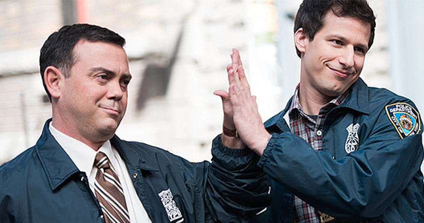
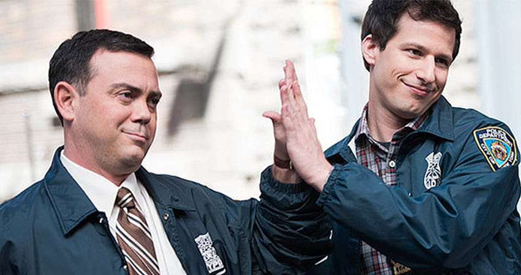

Jake Peralta
O detetive número um da 99. Casado com Amy, melhor amigo do Boyle e se dá bem como dupla com qualquer um do esquadrão... Menos o Hitchcock e o Scully. Não se deixe enganar pelo seu jeito brincalhão, Jake Peralta é um gênio na arte de solucionar casos.
Amy Santiago
A detetive número dois da 99. Sempre extremamente certinha e dedicada no seu trabalho, e sempre puxando o saco do chefe, o contrário do seu cônjuge. A única do esquadrão a ser promovida a sargento durante a série.
Charles Boyle
O melhor amigo de Jake e seu braço direito. Um fanático seguidor da tradição da família Boyle, seus valores não negam sua origem. Perdoe-me a foto dando ênfase no Jake, ele gostaria que fosse assim
Rosa Diaz
A casca grossa da delegacia. Fazer um interrogatório é com ela mesma. Ela é muito misteriosa, não se sabe muito sobre sua vida pessoal. Foi o grande amor de Charles durante muito tempo, mas ela nunca o correspondeu
Terry Jeffords
Um brutamontes, montanha de músculos, mas somente de aparência. Na verdade, ele é um grande papai, dentro e fora da 99. O sargento do esquadrão lida com diversas dores de cabeça, fruto de seus filhos... Quer dizer, companheiros. Suas filhas são uns anjos
Scully
Um dos integrantes da dupla de veteranos da 99. Raramento é visto nas ruas, no máximo é visto se levantando da cadeira. Apesar de ser um trágico detetive hoje em dia, nos anos 70 ele e sua dupla tocavam o terror no crime de Brooklyn, eram os galãs mais cascas grossas que vocês veriam
Hitchcock
O outro integrante da dupla de veteranos da 99. Dupla inseparável de Scully, só funcionam juntos. Assim como Scully, não são detetives muito eficientes hoje em dia, mas deitavam e rolavam em cima dos maiores criminosos do Brooklyn nos anos 70
Gina
A assistente do capitão, agregada da família Boyle (apesar de não ser a favor disso) e, com suas próprias palavras, a maioral. Gina com certeza sabe muito sobre muitas coisas. Graças a seu jeito egocêntrico, é difícil de adimitir que ela é realmente útil para a 99. Já sobreviveu a até mesmo a um atropelamento de ônibus e, pior ainda, a um caso com o Charles
Capitao Holt
Um capitão de polícia negro e gay é raro de se ver. Um tão competente e culto como esse, então... Holt é casado com Kevin, e juntos são pais do pet Cheddar. Ele é tanto quanto diferente das outras pessoas, é muito sistemático, por exemplo. Mas, é um excelente policial e o pai que o Jake nunca teve